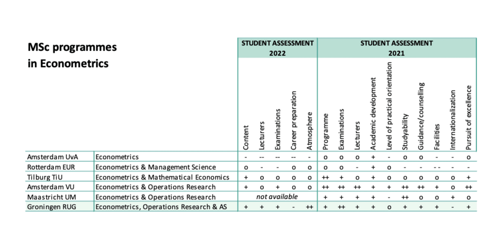

Information for 2nd and 3rd year BSc EOR
In short: EORAS is the advanced data analysis master programme of FEB
Illustration by example: Keep the city clean in a smart way by efficiently organizing waste collection.

Partner BCG, Aegon, pricing actuary Achmea, APG Asset Management, ASR, Data Analyst Ahold Delhaize, bol.com, ORTEC, PhD Student University of Oxford, Data Analyst LOGEX, professor at University of Groningen, designer at ATOS, senior policy advisor Dutch Healthcare Authority, supervisor national insurance groups at De Nederlandsche Bank, researcher ACM.
Details on Brightspace
| 1.1 | Dependence and Extremes in Risk Management |
| 1.1 | Optimization under Uncertainty |
| 1.2 | Models for Short Term Risk Management |
| 1.2 | Planning and Control of Stochastic Systems |
| 2.1 | Asset and Liability Management |
| 2.1 | Banking, Insurance and Risk Management |
| 2.2 | Data analysis and Machine learning |
| 2.2 | Quantitative Finance |
| 2 | Master's thesis Actuarial Studies |